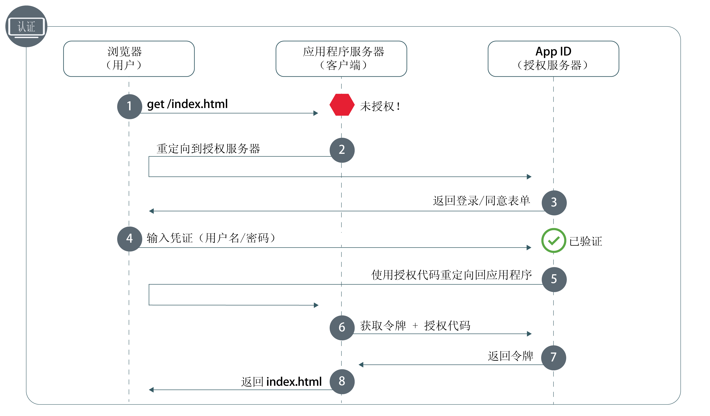
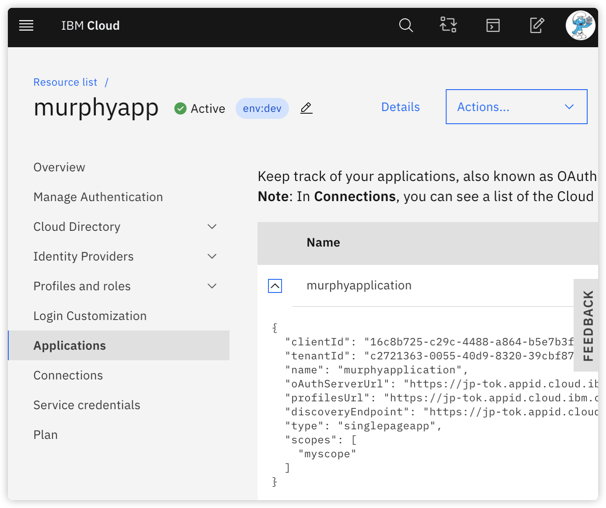
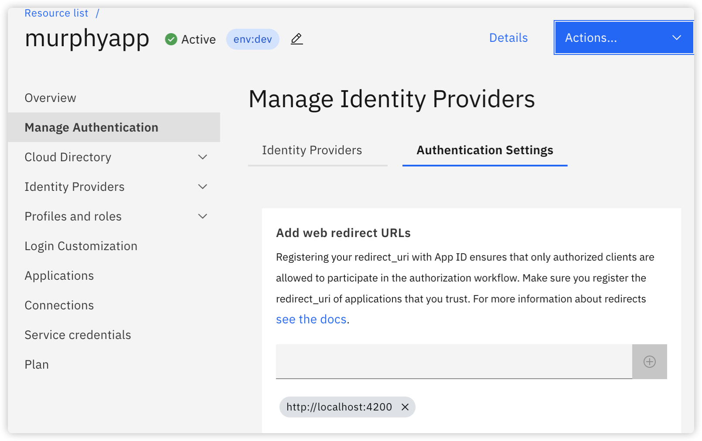
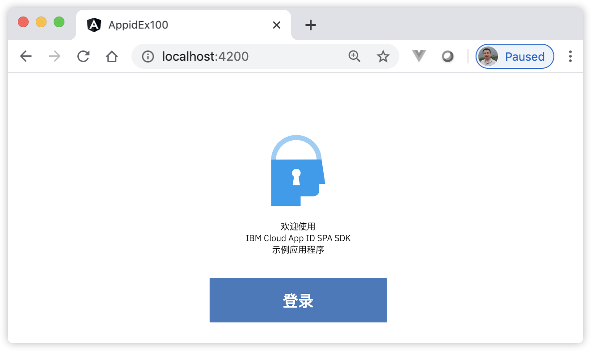
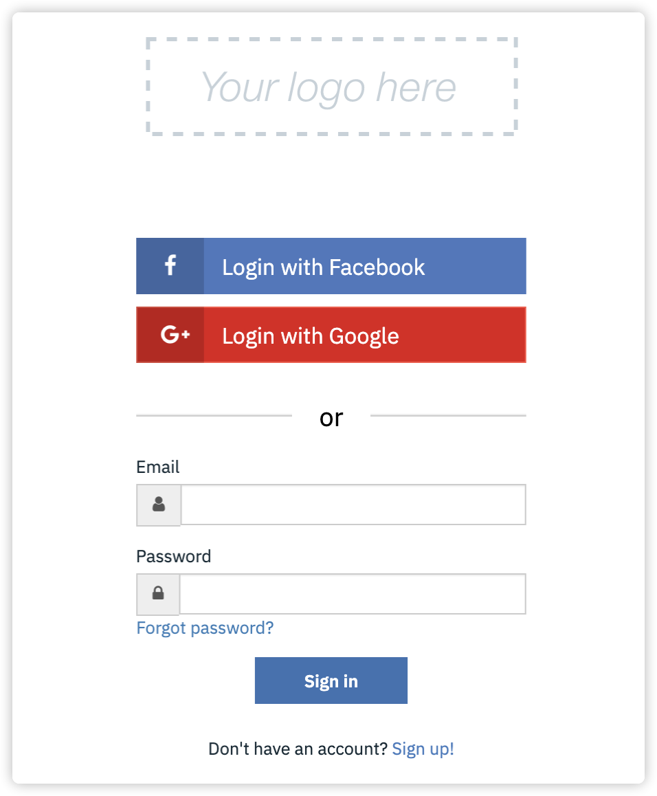
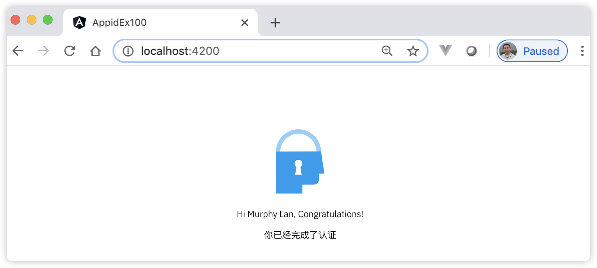

21 使用IBM Cloud™ App ID对Angular应用进行认证¶
目前大部分系统都期望为用户定制用户体验，比如系统的皮肤颜色、用户经常使用的模块、用户的偏好设置等。应用程序的成功都取决于系统与用户构建信任的能力，了解使用应用程序的对象是其中的一个关键部分。这归根结底是在保护访问的系统资源的同时，也要确保用户数据安全。系统从添加登录功能开始，用户进行登录，系统得到用户提交的信息，与系统中事先注册的身份进行比对，完全匹配后，表示登录成功，从而系统就能记住和识别这个用户了，这个过程就是认证。
IBM Cloud™ App ID（简称 App ID）就是可以帮助开发者轻松地向其移动和 Web 应用程序添加认证，并在云中托管用户数据，开发者可以使用这些数据来构建和定制应用程序的个性化体验。
21.1 什么是 IBM Cloud™ App ID 服务¶
App ID 帮助开发者仅需几行代码即可轻松地向 Web 和移动应用程序添加认证，并在 IBM Cloud 上保护其云本机应用程序和服务。通过要求用户登录到应用程序，可以存储用户数据（例如，应用程序首选项或来自公共社交站点的个人信息），然后利用数据来定制应用程序中的每个用户的体验。App ID 提供了登录框架。
App ID 基于 OAuth 2.0 授权框架和 Open ID Connect协议。OAuth 2.0 用于获取和验证用于访问受保护资源的授权，Open ID Connect 向应用程序添加认证和身份保护层。除了认证外，App ID 还符合以下规范：OAuth 2.0、OpenID Connect、JSON Web 令牌 (JWT)、JSON Web 签名 (JWS) 和跨域身份管理系统 (SCIM)。
使用 App ID，可以轻松地向应用程序中添加认证步骤。可以使用 API、SDK、预先构建的 UI 或企业自己的品牌 UI 向应用程序添加电子邮件或用户名登录、社交登录（Facebook，Github，Google，微信，博客等）或企业登录（系统本身）。
向应用程序添加认证和授权是风险与复杂性并存的操作，这也是我们选择App ID简化开发系统认证模块的原因。开发 Web 应用程序时，可以使用 IBM Cloud™ App ID Web 流程来安全地认证用户。然后，用户就可以在 Web 应用程序中访问服务器端受保护的内容。
21.2 了解 IBM Cloud™ App ID Web 的认证流程¶
我们先了解App ID对Angular应用进行认证的流程。下图21-1显示了如何使用 App ID 对Angular应用用户进行安全认证和授权。
图21-1 IBM Cloud™ App ID Web 的认证流程
{kind=link}
图21-1 中各步骤的详细说明如下：
用户尝试获取对受保护 Web 应用程序的访问权，但该用户未经授权；
应用程序将该用户重定向到 App ID；
App ID 显示用户可用于认证的登录屏幕；
用户输入其凭证，例如用户名和密码。App ID 对凭证进行验证；
App ID 使用授权代码将用户重定向回应用程序；
通过使用授权代码，应用程序向 App ID 发出请求以确保对用户进行验证；
App ID 返回已验证用户的访问令牌和身份令牌；
授权用户访问应用程序。
21.3 注册 IBM Cloud™ App ID 服务¶
首先需要向 App ID 注册及添加应用程序，然后再创建应用程序凭证。具体的操作步骤如下：
注册用户。首先注册成为 IBM Cloud（网址：https://cloud.ibm.com/）用户，并登录到仪表板页面；
创建App ID服务的实例。在IBM Cloud仪表板页面选择App ID服务类别，进入页面后，按照提示创建一个App ID服务的实例；
创建应用程序。导航至应用程序选项卡，然后单击添加应用程序，为应用程序提供名称，从类型下拉列表中，选择单页面应用程序，单击保存；
查看凭证。在资源列表中，选择应用程序（Applications）类别，单击刚创建的应用程序实例，查看到如图21-2所示的凭证信息。
图21-2 查看凭证
{kind=link}
添加App ID服务返回的重定向URI跳转地址。在资源列表中，选择管理认证（Manage Authentication）类别，选择认证设置（Authentication Settings）选项卡，在输入框中输入跳转地址，这里作为本地运行环境，因此填写地址为“http://localhost:4200”，如图21-3所示：
图21-3 添加App ID服务返回的跳转地址
{kind=link}
完成了上述准备工作后，接下来创建本地应用，使用IBM Cloud™ App ID对Angular应用进行认证。
21.4 [示例 appid-ex100] 使用IBM Cloud™ App ID对Angular应用进行认证¶
用Angular CLI构建应用程序，具体命令如下：
ng n appid-ex100 -S --routing --defaults=true
启动服务，具体命令如下：
ng serve
查看应用程序结果。打开Web浏览器并浏览到 “http://localhost:4200”，应该看到文本 “Welcome to appid-ex100!”。
安装 IBM Cloud AppID SDK的依赖包，具体命令如下：
npm install ibmcloud-appid-js -S
创建两个组件，分别对应登录前页面和登录成功后的页面，具体命令如下：
ng generate component welcome ng generate component home
编辑welcome组件。编辑文件src/app/welcome/welcome.component.ts，并将其更改为以下内容：
import { Component, Output, EventEmitter, OnInit } from '@angular/core'; import AppID from 'ibmcloud-appid-js'; @Component({ selector: 'app-welcome', templateUrl: './welcome.component.html', styleUrls: ['./welcome.component.css'] }) export class WelcomeComponent implements OnInit { style = 'show'; buttonDisplay = 'show'; errorStyle = 'hide'; errorMessage = ''; appid = new AppID(); @Output() changeState = new EventEmitter(); async ngOnInit() { try { await this.appid.init({ clientId: '对应图21-2中的clientId', discoveryEndpoint: '对应图21-2中的discoveryEndpoint' }); } catch (e) { this.errorMessage = e.message; this.errorStyle = 'show'; } } async onLoginClick() { try { this.buttonDisplay = 'hide'; const tokens = await this.appid.signin(); const decodeIDTokens = tokens.idTokenPayload; const userName = 'Hi ' + decodeIDTokens.name + ', Congratulations!'; this.style = 'hide'; this.changeState.emit({ userName }); } catch (e) { this.errorMessage = e.message; this.errorStyle = 'show'; this.buttonDisplay = 'show'; } } }
编辑welcome组件模板。编辑文件src/app/welcome/welcome.component.html，并将其更改为以下内容：
<div id="welcome" [ngClass]="style"> <div class="welcome-display"> <div> <img alt="App ID Logo" class="logo-icon" src="https://appid-management.eu-gb.bluemix.net/swagger-ui/images/app_id_icon.svg"> <p> 欢迎使用<br> IBM Cloud App ID SPA SDK<br> 示例应用程序 </p> </div> <button id="login" [ngClass]='buttonDisplay' (click)="onLoginClick()">登录</button> <div [ngClass]="errorStyle" id="error">{{errorMessage}}</div> </div> </div>
编辑home组件。编辑文件src/app/home/home.component.ts，并将其更改为以下内容：
import { Component, Input } from '@angular/core'; @Component({ selector: 'app-home', templateUrl: './home.component.html', styleUrls: ['./home.component.css'] }) export class HomeComponent { @Input() displayState: string; @Input() userName: string; }
编辑home组件模板。编辑文件src/app/home/home.component.html，并将其更改为以下内容：
<div [ngClass]="displayState"> <div class="welcome-display"> <img alt="App ID Logo" class="logo-icon" src="https://appid-management.eu-gb.bluemix.net/swagger-ui/images/app_id_icon.svg"> <p>{{userName}}</p> <p>你已经完成了认证</p> </div> </div>
编辑根组件。编辑文件src/app/app.component.ts，并将其更改为以下内容：
import { Component } from '@angular/core'; @Component({ selector: 'app-root', templateUrl: './app.component.html', styleUrls: ['./app.component.css'] }) export class AppComponent { title = 'appid-ex100'; displayStateStatus = 'hide'; userNameStatus = ''; onChangeState(value) { this.displayStateStatus = 'show'; this.userNameStatus = value.userName; } }
编辑根组件模板。编辑文件src/app/app.component.html，并将其更改为以下内容：
<app-welcome (changeState)="onChangeState($event)"></app-welcome> <app-home [displayState]="displayStateStatus" [userName]="userNameStatus"></app-home>
编辑全局样式。编辑文件src/styles.css，并将其更改为以下内容：
body {margin: 0;padding: 0;max-width: 100%;overflow-x: hidden;} .hide {display: none;} .show {display: block;} .welcome-display {display: block;font-family: 'IBMPlexSans-Light', sans-serif;font-size: 1.5vw; text-align: center;margin: 10% auto 0;} .logo-icon {width: 70px;height: 70px;} #login {font-family: 'IBMPlexSans-Medium', sans-serif;font-size: 14px;color: #FFFFFF; text-align: center;background-color: #4178BE;border: none;cursor: pointer;width: 158px; height: 40px;margin: 20px auto 0;} #error {padding-top: 20px;font-size: 14px;color: red;}
观察应用程序页面，页面显示效果如图21-4所示：
图21-4 演示使用IBM Cloud™ App ID登录
{kind=link}
用户点击“登录”按钮后，页面将弹出一个新的窗口，显示效果如图21-5所示：
图21-5 使用IBM Cloud™ App ID登录中
{kind=link}
用户选择其中一种方式成功登录后，弹出的页面自动关闭，应用程序首页显示用户登录成功提示，效果如图21-6所示：
图21-6 使用IBM Cloud™ App ID登录成功
{kind=link}
在上面的步骤中，完成了以下内容：
安装了IBM Cloud AppID SDK的依赖包：ibmcloud-appid-js；
步骤6在组件的OnInit()方法中调用AppID服务实例的init()方法初始化服务，初始化时，用到了注册 IBM Cloud™ App ID 服务时，创建应用程序后得到的凭证参数；在onLoginClick()登录方法中，显示的调用了AppID服务的signin()方法打开登录窗体页面，同时Angular应用的首页上的登录按钮被隐藏起来了；
用户在新窗口中，选择登录方式，进行登录后，新的窗体将自动关闭，Angular应用程序首页显示出用户登录成功的提示；
图21-5所示的窗体页面样式，可以在资源列表中，选择登录自定义（Login Customization）类别，在页面中对布局和Logo进行定制；
此示例中仅演示了使用IBM Cloud™ App ID登录的基本功能，关于IBM Cloud™ App ID的其他功能，还有很多，读者可以自行前往官方文档中查阅。总之可以看出，选择App ID确实简化了开发系统认证模块的步骤。
21.5 小结¶
本章介绍了使用IBM Cloud™ App ID对Angular应用进行认证的应用知识。2019年7月，IBM以340亿美元的高价完成了对开源混合云领导者红帽的收购，IBM Cloud在中国落地的合作伙伴选了神州数码，解决了云服务入华的问题。IBM Cloud已经与红帽此前的OpenShift、企业Linux等产品进行了快速融合，本章带领读者通过示例了解及认识了IBM Cloud，读者相信，IBM Cloud不久将会在国内占据一块技术市场。